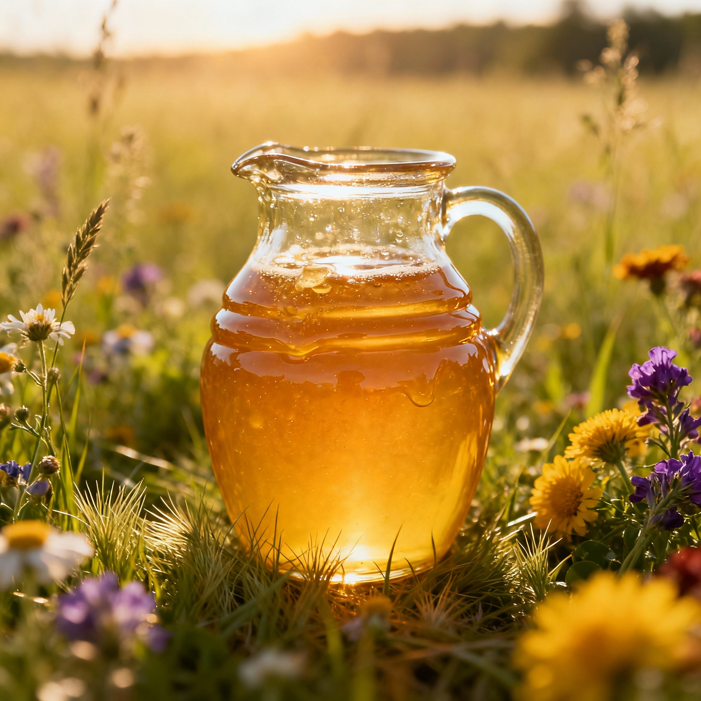
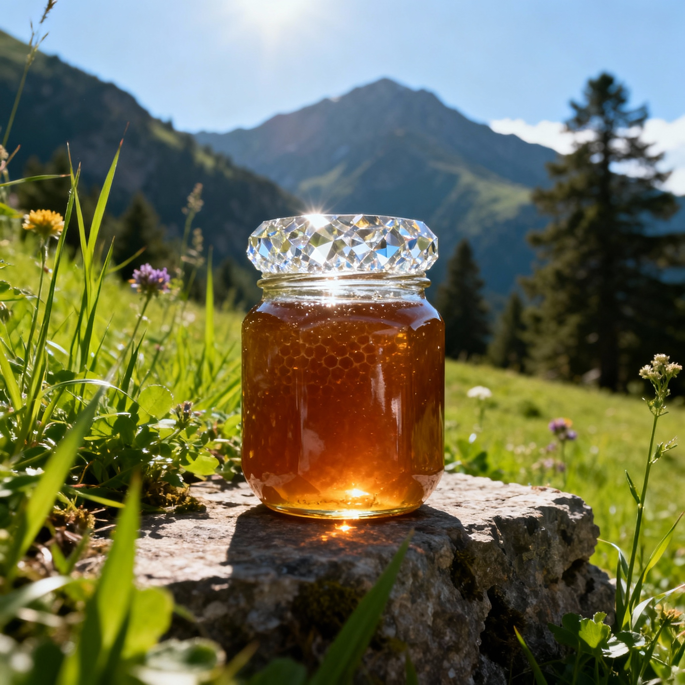
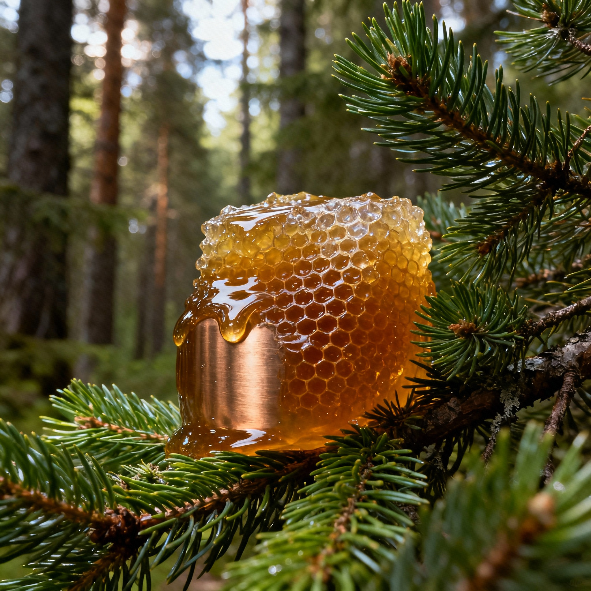

Научный взгляд на уникальный природный продукт: его свойства, виды и целебная сила.
Начать исследованиеАлтай — это не просто географическое название, а целая экосистема, сохранившая свою первозданную чистоту. Благодаря уникальному климату и богатейшему разнообразию растений-эндемиков, местный мёд приобретает неповторимый состав и исключительные полезные свойства. В нашем исследовании мы раскроем тайны этого удивительного продукта.

Свойства: Общеукрепляющее, успокаивающее. Идеален для ежедневного употребления.

Свойства: Повышает иммунитет, обладает антибактериальным эффектом.

Свойства: Мощное противовоспалительное средство, полезен для дыхательной системы.
Алтайский мёд — это сложный биологический продукт, содержащий более 300 полезных веществ. Его уникальность заключается в высоком диастазном числе и богатом содержании микроэлементов.
Энергия природы в каждой ложке.
Исследуйте на карте ключевые районы сбора различных сортов алтайского мёда.